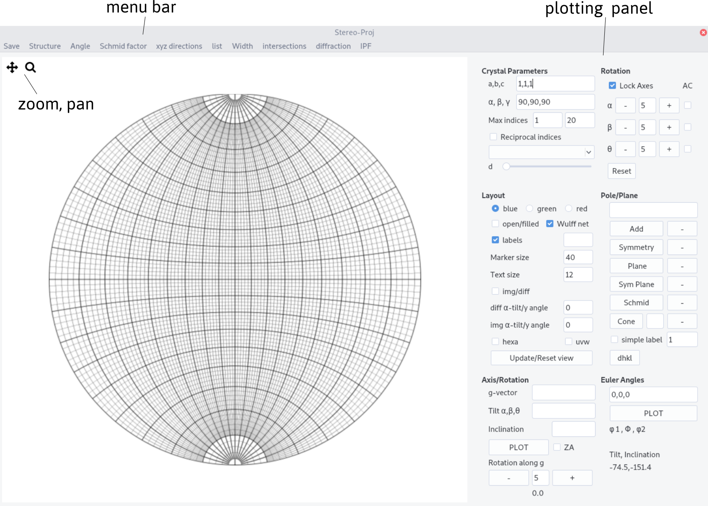
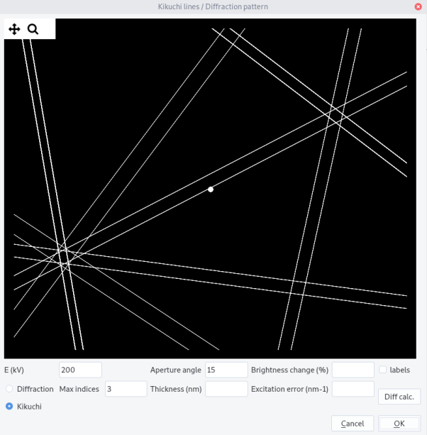
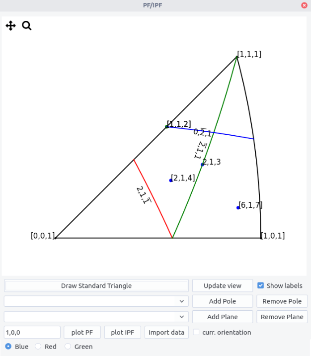

StereoProj
Stereoproj allows to work with stereographic projections.
Stereographic projections¶
A stereographic projection is a type of projection that maps a unit sphere onto a plane. It is a conformal projection, which means it preserves angles. Stereographic projections are often used for practical reason in crystallography to display symmetry elements. This is an essential tool for electron microscopists who want to analyze microstructures. Traditionally, projections are drawn by hand with the help of a Wulff net.
Construction¶
Let's consider the south pole S of a sphere lying in a (x,y,z) coordinate system. A point M in the upper hemisphere of the sphere can be projected on M' defined as the intersection between the line MS and the equatorial plane, i.e the plane that cuts the sphere at z=0.

Projection convention
From a geometrical construction, points in the lower hemisphere (z negative) do not appear. They can alternatively be projected on the plane from the north pole instead. Opposite 3D directions, will then have opposite coordinates in the projection plane. In Stereoproj, we choose to discard points from the lower hemisphere.
From this construction, it results several important features:
-
3D directions (x_0,y_0,z_0) are projected into points of coordinates (X_0,Y_0) such as X_0= \frac{x_0}{1+z_0} \ Y_0=\frac{y_0}{1+z_0}.
-
circles on the sphere, which correspond to 3D planes (full circles) or cones (smaller circles), are projected as portion or full circles.
-
the north/south pole is located at the center of the stereographic projection.
-
the equatorial plane is projected as a great circle that bounds the stereograpic projection.
-
any 3D direction can be defined by two angles 1 that we can choose as their inclination angle \eta with respect to the Oy direction and tilt angle \alpha with respect to the reference equatorial plane.
The Wulff net¶
The Wulff net results from the projection of equally distributed planes called meridians and parallels 2. The first ones correspond to planes of a given tilt angle, the second correspond to planes of a given inclination angle 3. In Stereoproj, meridians and parallels can be displayed and are spaced every 2° with thicker lines every 10°.
Meridians and parallels forming a Wulff net. Definition of the inclination and tilt angles.
Euler angles¶
The orientation of a crystal can be set by 3 angles. Indeed, given a direction, defined by two angles, the orientation can be fixed after rotating along this direction. A second standard definition of orientation is set by the Euler angles (\varphi_1, \phi, \varphi_2). In crystallography, it is traditionally adopted, according to Bunge, that it corresponds to:
-
a rotation along the z of axis \varphi_1
-
a rotation along x' of \phi
-
a rotation along z' of \varphi_2.
In the example below: (\varphi_1,\phi,\varphi_2)=(-80,40,30)
Definition of the Euler angles, represented on the stereographic projection and in 3D. Points on the projections indicate the x,y,z directions.
Rotation matrices and Euler angles
The orientation is defined by a rotation matrix that links the reference frame (x,y,z) to the crystal frame (x',y',z') by composing the 3 rotations. In the example shown, it was considered that the rotations operate sequentially in a moving frame: they are called intrinsic.
This definition is however not convenient for working with rotation matrices as the rotation axes move in the reference frame. So, we can define the Euler angles from extrinsic rotations, i.e. rotations that operate in the fixed reference frame (x,y,z), in the way presented in the figure below for (\varphi_1,\phi,\varphi_2)=(-80,40,30).

This corresponds to: a rotation along z of an angle \varphi_2, a rotation along x of \phi and a rotation along z of \varphi_1, i.e. 5:
$$ R=R_z(\varphi_1)R_x(\phi)R_z(\varphi_2) $$ where R_z(a) and R_x(a) are the rotation matrices along x and z axis of an angle a. Inversely, knowing the rotation matrix, the Euler angles can be determined: $$ \varphi_1 = \arctan(R_{02}/R_{12}), \phi = \arccos(R_{22}), \varphi_2 = \arctan(R_{20}/R_{21}) $$ However, when \phi=0 (\pi), the angles \varphi_2 and \varphi_1 are not defined independently, i.e. because they share a common rotation axis. This phenomena is known as gimbal lock and can be resolved by setting \phi = 0, \varphi_1 = 0 and \varphi_2 = \arctan(R_{10}/R_{00})
Coordinate systems¶
Microscope coordinate system is defined by the axes (x,y,z) as shown in the figure below. The y axis corresponds to the holder primary tilt axis called \alpha-tilt axis. The x direction corresponds to the secondary tilt axis called \beta-tilt axis for a double tilt sample holder. The z direction is anti-parallel with the electron beam. It corresponds to the rotation axis for a tilt-rotation sample holder. By default, the rotation angles are taken positive in the clockwise sense, i.e. right handed.

The sample, and then the crystal, can be rotated around the tilt axes. Rotation steps are 5° by default. The value of rotation angle are indicated. The sense of rotation can be changed by ticking the AC (anti-clockwise) box.

The Reset button allows to reset the values displayed.
When the Lock Axes box is checked, the x and z axes are now fixed with the sample, in order to mimic the behavior of double tilt and tilt-rotation holder.
Rotation in double tilt
When the axes are fixed in the microscope frame (x,y,z), the rotation order matters. However, when the x axis is fixed in the sample frame and y fixed in the microscope frame, the two operations are commutative. In terms of rotation matrices, we have:
Same conclusions hold for tilt-rotation holder.

Top: rotation with fixed rotation axes, Bottom: rotation with a fixed y tilt and moving x tilt. Red and blue paths represent a switch in the tilt order.
Crystallographic feature analyses are carried out in a TEM using both diffraction and image mode. When the electrons passing through the specimen are focused in the back focal plane of the objective lens, they form a diffraction pattern which can be magnified in the projection plane where the pattern is recorded. Conversely, an image is formed in the first image plane of the objective lens, which can also be magnified by the projection lenses. To switch from image to diffraction mode, the power of the objective lens has to be modified which induces an image rotation. To enlarge the pattern or the image, the effect of intermediate and projection lenses may also introduce rotations. For this reason, the holder coordinate system does not correspond to the coordinate system as viewed in the recorded image or diffraction patterns. Users need thus to determine the relation between the two.

In image mode, the position of the \alpha-tilt axis with respect to the Y axis, represented by an angle \delta, can be determined by pushing or pulling on the holder and recording the motion of features on the image.
In diffraction mode, the position of the \alpha-tilt axis with respect to the Y axis, represented by an angle \xi, can be determined by rotating the crystal and recording the displacement of the Kikuchi bands, which will be perpendicular to the rotation axis 4.
180° rotation
Because images and diffraction patterns are naturally inverted because of the objective lens, there usually exists a 180° rotation between image and diffraction modes. In some cases, this extra rotation needs to be taken into account, i.e. when we care about (h,k,l) or (\bar{h},\bar{k},\bar{l}). This can be solved by inspecting the sense of displacement of the Kikuchi lines with respect to the tilt angle, or by inspecting how the image is inverted or not in diffraction mode, compared to image mode, when under or over-focusing the diffraction lens. A 180° rotation exists if the image seen in the transmitted beam in diffraction mode is rotated when under-focusing the diffraction lens.
Because it is easier to navigate in the stereographic projection when knowing either the angle \delta, in reciprocal space or \xi in direct space, the rotation angle in image and diffraction mode can be indicated in the diff alpha/y-angle and image alpha/y angle fields. Tick the img/diff box to switch to image mode. When the view is updated, the tilting axes (and Wulff net) are rotated accordingly along the z axis as illustrated in the picture below.

Note
Note that the Euler angles are always defined in the microscope coordinates, which is now rotated. Rotation along the \alpha, \beta and \theta axes will now be updated. The diffraction patterns and Kikuchi bands are plotted owing the rotation indicated in the diff alpha/y_angle entry.
Interface¶
The interface is composed of a top menu bar, the plotting area and the plotting panel. Zoom and pan are available in the plotting area. Click on the update/reset view button to restore the full view.

Plotting procedure¶
Setting up the crystal¶
Stereographic projection reflects the symmetry of a given lattice system which depends on the lattice parameters a,b,c and the angles \alpha, \beta and \gamma of the cell. a,b,c and \alpha, \beta, \gamma can be set up in the Crystal parameters.
Info
A crystal direction expressed by their Miller indices are related to cartesian coordinates, in the crystal frame, by:
with
V being the crystal volume V = a b c \sqrt {1 - \cos^2\alpha - \cos^2 \beta - \cos^2 \gamma + 2 \cos \alpha \cos \beta \cos \gamma }
Inversely in the reciprocal space, poles, i.e. normal to planes are related by:
with D^\ast= (D^{-1}) ~^T.
The metric of the crystal G allows to measure distance in direct and reciprocal space. The inter-reticular spacing for a plane (h,k,l) for instance is given by:
with
Change the number of pole/direction drawn by increasing or decreasing the value of d and/or by changing the maximum indices first value (see simple-labels for the second value below).

Crystal structure can be imported from the structure menu. This menu can be populated by adding structures in the structure.txt files following the template:
Name a(A) b(A) c(A) alpha beta gamma space group
The space group is defined in the space_group.txt file following the scheme:
Name
Atom name1 x1 y1 z1
Atom name1 x2 y2 z2
...
Atom name2 x3 y3 z3
Additionally, atoms need to be defined in the scattering.txt file (see diffraction for more details).
From diffraction, crystals with different space groups (even with the same lattice system) present diffraction vectors, i.e. in the reciprocal space, with different intensities. Filling the space group field and ticking the reciprocal indices box will allow to plot poles with sizes proportional to their intensity (see the diffraction page for more details).
Example for a TiAl crystal
From Euler angles¶
Stereographic projections can be drawn from the 3 Euler angles. The angles can be read at all time after rotation operations. \alpha-tilt and inclination angles can be read from the mouse position on the Wulff net.

From a zone axis¶
If a zone axis can be assigned, the orientation can be retrieved in the following way:
-
determine \langle u, v, w\rangle indices of the zone axis 6 and identify one diffraction vector (see diffraction)
-
set first tilt angles \alpha, \beta, \theta (comma separated) to 0,0,0 and inclination \eta to 0
-
tick the
ZAbox -
plot and then rotate around
z(orRotation along g) in order to bring the diffraction vector at the correct inclination in the projection reference frame. Note this angle. -
set \alpha, \beta, \theta to the values where the zone axis was recorded. Indicate \eta with the retrieved value.
From a diffraction vector¶
The orientation can be alternatively set the following way:
-
choose a diffraction vector (h,k,l) (see diffraction to determine it)
-
set its inclination \eta and tilt angles \alpha, \beta, \theta (comma separated)
-
adjust a second diffraction vector by rotating around the first vector
Multiple tilting axes
When considering a diffraction vector obtained after double tilt (\alpha and \beta) or after tilt-rotation (\alpha, \theta), the diffraction vector should be placed on the stereographic projection taking into account the fact that the \beta (or \theta) -tilt axis moves with the holder while \alpha-tilt is fixed. For instance, if the (1,1,1) diffraction vector is recorded at (\alpha,\beta,\theta)=(10,-20,0) with an inclination of \eta=40, the diffraction is placed such that after rotating first by \beta=-20 and second by \alpha=10 it forms an angle \eta=40 with the y direction on the diffraction pattern (owing that there is no rotation between the \alpha tilt axis and the y direction). This means that in the sample frame, the diffraction vector coordinates are, starting from [0,1,0], in the direction [x,y,z], given by: a rotation of -\eta then a rotation of -\alpha and finally a rotation of -\beta:

Plotting poles/planes/cones¶
Poles (or directions) can be additionally plotted. Add a pole or all the symmetric ones by pressing Symmetry after entering the indices comma separated. A Plane or all their symmetric,Sym Plane can be drawn.
A Cone can be drawn by specifying its aperture angle.

Iso-schmid factor lines can be plotted by specifying the plane in the pole/plane field and by pressing the Schmid button. The straining axis is here parallel to the \alpha-tilt axis. Further explanation will be given
here.

Finally inter-reticular distances are given by entering a plane normal on the pole/plane field and by pressing dhkl button. The value appears in a field near the button.
Simple labels¶
Simplified labels can be drawn if the simple label box is ticked. By default, simple labels are searched within an angular range of 1 degree, but it can be changed in filling the simple label field. The maximum indices for the search depend on the second values of the max indices value. By default, it is set to 20 but can be increased (need to replot). Keep in mind that large values will slow down plotting and searching.
Layout¶
Several layout options have been already discussed. Additional ones are presented here.
-
Colors can be set for poles or planes plotted.
-
Open symbols can be drawn by ticking the
open/filledbox (default are filled symbols). -
Wulff net can be drawn if the
Wulff netbox is ticked. -
Marker size and text size can be indicated in the corresponding fields.
-
[uvw] can be displayed by ticking the
uvwbox and replotting.

- By default, indices are plotted up to
max indices= 3 if thelabelsbox is ticked and the labels field is left empty. This limitation avoids slow plotting. To draw a large number of poles/directions with a limited number of indices, simply indicate the maximum plotting indices, in the labels field (example is shown below formax indices= 6 andlabels= 1)
For hexagonal structure, the hexa box can be selected to let the 4 indices notations.
Hexagonal structure and notation
For hexagonal structure, it is more convenient to represent directions or planes using a basis with 4 integer indices than using the conventional cartesian basis. This basis is composed of the 3 vectors \vec{a}_i separated by 120° angles and the \vec{c} perpendicular to the \vec{a}_i vectors. Hence any directions is given by [uvtw] with t=-u-v. In the reciprocal space, a plane is represented by (hkil) with i=-h-k.
Transforming indices from the 3 (HKL) indices to 4 (hkil) indices is straightforward for planes as H=h, K=k, L=l. For directions, [UVW] we have the relationships, U=2u+v, V=2v+u and W=w or u=1/3(2U-V), v=1/3(2V-U) and w=W.
Note that with the four indices notations, directions are perpendicular to plane normals (i.e. contain in a plane) if (hkil)\cdot[uvtw]=0 as shown for instance below.
Note that for Euler angles convention, \langle a \rangle is parallel to x and \langle c \rangle is parallel to z at (0,0,0).

Except uvw and colors, the above features can be updated by clicking the Update/Reset view button.
click a pole/directions
By right clicking on the stereographic projection, poles or directions (if uvw is ticked) will be displayed. Make Ctrl+z to remove the last click.
Additional features¶
They are accessible from the menu bar.
Save¶
Stereographic plots can be saved as image with png format.
Angle¶
Angles between two poles (or two directions if the uvw button is ticked) can be computed by entering them in the field n1 and n2 (comma separated). The result appears after pressing OK. Cancel to quit.
Schmid factor¶
Schmid factors can be computed by entering both \vec{b} (as a direction), plane normal \vec{n} and straining axis \vec{T}. \vec{T} should be expressed in the microscope coordinate system.

After pressing OK, the Schmid factor appears below the the T field. In the box below appear all possible slip systems n, b, with their Schmid factor values s.
Schimd factor
For a crystal strained along a tensile axis \vec{T} with a stress \sigma, dislocation slip on plane \vec{n} with the Burgers vector \vec{b} will happen if the resolved shear stress on the plane rises a critical value, i.e. $$ \tau_c=\sigma \cos {(\vec{n},\vec{T})} \cos{(\vec{b},\vec{T})} $$ Thus, the most favored slip system should be the one with the highest Schmid factor i.e., m=\cos{(\vec{n},\vec{T})} \cos{(\vec{b},\vec{T})}. For dislocation glide, m should range between 0 and 0.5
xyz directions¶
x,y,z directions can be determined in the calculate xyz directions menu. Simply press update. The values indicated correspond to poles (i.e. in reciprocal space). Copy, paste in the pole/plane field and Add to plot. To get directions, use the hkl<>uvw menu. Press To uvw or To hkl to make the conversion. Then, copy and paste the result in the same way except uvw box need to be ticked.

List¶
A list of plotted poles/directions can be displayed using the show list poles/directions menu. When the Update list button is pressed the list is printed in a table showing in columns:
-
indices
-
a sign
ofor plotted orxfor hidden -
hklfor a pole anduvwfor a direction
Poles/directions can be hidden or shown by selecting the corresponding rows and by clicking on Add/Remove selected button. Then the signs o or x change.
Planes or cones of the given poles/directions will be hidden/shown if the plane or cone box is checked.
If the list is updated, then the hidden poles/directions are deleted.
An easier navigation in the crystal space can be achieved by determining the tilt sequence to reach either a given two-beam condition or a zone axis. The angles are indicated in the last table column when pressing the Compute tilt button.
If the ZA (zone axis) button is ticked, the \alpha-tilt and either \beta tilt or \theta tilt needed to reach the corresponding zone axis are computed. The corresponding \beta or \theta tilt button needs to be selected.
If the ZA button is not selected, the \alpha tilt angle needed to have a given pole/direction perpendicular to the electron beam (may correspond to a two-beam condition) can be computed for a given \beta or \theta tilt angle.
Width¶
Using calculate apparent width menu allows to plot the apparent width and apparent trace directions of an interface, when the sample is tilted along the \alpha-tilt axis from -40° to 40°. More details on the method will be given in interface.
First, indicate the plane. The foil surface may be indicated if the box right to the box is ticked. The sample thickness may be indicated in nm if the box is checked . If not, the apparent width is normalized by the interface width d. The trace dir. can be plotted if the box is checked with a blue overlay. Note that if several plots are made, which can be sometimes convenient, they will be superimposed. To erase the plots, click the clear button.

Intersections¶
Several intersections can be calculated through the calculate intersections menu.
In the different cases, results will appear by pressing OK. Results shown correspond to poles except if the directions box is ticked.
-
intersections between two planes
n1andn2. -
intersections between a plane
n1and the direction in the (x,y) plane making a given angle with the Oy direction indicated by anangle(°). -
intersections between a plane
n1and a conecof a given angle aperture indicated by theinclination angle(°). If no solution,nanwill appear.

Diffraction¶
The plot Kikuchi lines and diffraction pattern menu allows simple diffraction features drawing. They can be accessed through the button Diffraction or Kikuchi, after setting a crystal and an orientation (see above).
Diffraction pattern¶
The following parameters are needed:
-
Acceleration voltage:
E(kv) -
Aperture angledetermining the extension in (°) viewed in the reciprocal space -
Max indicesdetermining the extension of the reciprocal space calculated -
Brightness change(in %) offsetting image intensity. Allow the visualization of low intensity spots -
Thicknessis the sample thickness in nm -
Excitation errorin 1/nm
Click on Diff calc. button to compute the intensity of every g-vector (see diffraction for more details)
Click then on OK button to draw the diffraction pattern. Update the drawing by clicking OK if the orientation is changed.
Tick the label box to show indices (for hexagonal crystal, 3 indices are used).
Diffraction pattern simulation
When an incoming electron wave of wavelength \lambda and a wave vector \vec{k} hits a crystal plane, it will be elastically diffracted in a direction given by the wave vector \vec{k}_g, with the relation: $$ \vec{k}_g=\vec{k}+\vec{g} $$ or equivalently $$ 2d\sin{\theta_B}=\lambda $$ where \theta_B is the Bragg angle and d the interplanar distance defined by the \vec{g} vector.
When the crystal is tilted away from the Bragg condition, diffraction ceases but not abruptly. To determine the decrease of the intensity, we need to define the vector \vec{s} which norm is called the excitation error, as shown below.
Two beam calculations show that:
where t is the crystal thickness, \xi the extinction distance, which indicates how the diffracted electron wave oscillates through the crystal, and s_e= \sqrt{(s^2 + 1/\xi^2)} the effective excitation error.
For a given orientation, the excitation error s can be computed for every possible diffraction vectors, and then their corresponding intensity.
Absorption was in addition taken into account. It implies taking a second extinction distance \xi'_g defined from the imaginary part of the crystal potential. Here \xi'_g is fixed chosen as \xi'_g/\xi_g = 10.
Note that all the above approximations are not intended to reproduce the correct intensities for multiple beam as in zone axes but provide a first guess.

Kikuchi lines¶
Kikuchi lines results from inelastic scattering in the sample and will be more discussed in the Kikuchi section. They can be plotted by selecting Kikuchi button.
The following parameters are needed:
-
Acceleration voltage:
E(kv) -
Aperture angledetermining the extension in (°) viewed in the reciprocal space -
Max indicesdetermining the number of bands calculated
Click on Diff calc. button to compute the intensity of the band.
Click then on OK button to draw the Kikuchi pattern. Update the drawing by clicking OK if the orientation is changed.
Change the Aperture angle to view a larger pattern.
Tick the label box to show indices (for hexagonal crystal, 3 indices are used).
Kikuchi band formation
When inelastically scattered electrons are in Bragg conditions, they will diffract, but because they can come from different directions, they will be scattered in a cone around \vec{g}. As there are two diffraction directions (\pm \vec{g}), two cones will form, one being brighter and the other darker than the background. When hitting the observation screen, they will form pairs of lines which separation width is proportional to the inter-planar distance d. Their projection is called gnomonic, i.e. a point of coordinate (x,y,z) will become (X,Y) with X = x/z and Y = y / z.
Here, to mimic the kinematical approximation, the line widths are proportional to the intensity of the corresponding diffraction vector and the intensity difference between the lines are not taken into account.

Pole and inverse pole figures¶
Pole figures (PF) represent given (equivalent) poles in the microscope coordinates. At variance, inverse pole figures (IPF) are used to represent a given direction in the crystal coordinate system. As they reflect the crystal structure, IPF are drawn in the minimal area of the stereographic projection, called the standard triangle, where all equivalent poles or crystal directions can be brought back by a point group symmetry operation of the crystal. Hence, seven different standard triangles corresponding to the seven crystal systems have to be considered. For cubic crystals for instance, the standard triangle, is defined by the (010), (\bar{1}01) and (\bar{1}10) planes and the [001], [111] and [101] directions as vertices.
To draw PF and IPF:
-
use the
PF/IPFmenu and selectDraw PF/IPF. -
once the crystal is selected and plotted in the main window, press
Draw Standard Triangle.
For IPF:
-
to add directions, tick the
uvwbutton in the main window. Untick to draw poles. -
Fill the pole entry and click
Add pole. The pole/direction or an equivalent one is plotted with the selected color. -
Untick the
Show labelsbutton and pressRefresh viewto hide the labels. Label sizes can be changed through theText sizeentry in the main window and updated after pressingUpdate/Reset viewbutton andRefresh view. -
Pole/directions are stored in the drop down list. Select one and click
Remove poleto remove them. -
Given planes can be drawn using the plane drop down list and the
Add plane,Remove planebuttons. -
Zoom and pan using the toolbar.
Refresh viewto reset. -
To draw pole figure given the current orientation \varphi_1, \phi, \varphi_2 tick the
curr. orientationbox and clickplot IPF. The direction (x,y,z) should be indicated in the left box. By default1,0,0thus indicates the x direction.

For PF:
- For a given orientation, tick the
curr. orientationbox and clickplot PF. The pole {h,k,l} should be indicated in the left box. By default1,0,0thus indicates the {1,0,0} poles.
Import data to plot IPF and PF for different orientations (cloud points):
Import datafrom.txtfile with the following scheme
# Any comments
phi1,phi,phi2
...
-
After import the file name appears below. Note that the
curr. orientationshould not be ticked. -
plot points with
plotPFandplotIPFbuttons.

-
In the reference frame, the vector (0,1,0) is first rotated along z by an angle \eta and then along y by an angle \alpha, the rotation axes being fixed. The definition proposed here differs from the usual spherical coordinates that refers on azimuth and elevation angles. ↩
-
These names usually refer in geography to lines of given longitude and latitude connecting north and south poles. Here the lines connect east and west poles of the sphere. ↩
-
As meridians pass by two poles, they correspond to full circles on the sphere. Contrary parallels (except the equator) correspond to smaller circles on the sphere. Meridians result then from the intersection of planes with the sphere and parallels from the intersection of cones of given aperture. ↩
-
Note that the Kikuchi bands move in the opposite directions than the corresponding planes in the stereographic projection. It is due to the fact that the electron beam points toward the lower hemisphere of the stereogram. ↩
-
We consider active rotations and rotation matrix acting by pre-multiplying column vectors. ↩
-
be aware that zone axis indices are given in the direct space. ↩